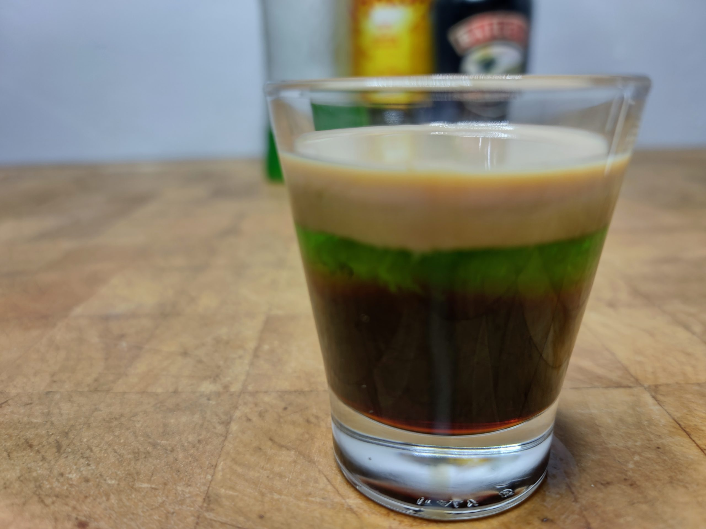

Ogre Overload Shot

Introducing the 'Ogre Overload' shot, a potion of pure ogre power that's so good, it'll have you saying, 'This shot is ogre the top!' This delightful concoction blends the bold kick of coffee liqueur with the sweet and luscious twist of melon liqueur, all harmoniously tamed by Irish cream, creating a drink that's as unforgettable as Shrek's charming personality.
Ingredients
-
1 oz coffee liqueur (Kahlua)
-
1 oz melon liqueur (Midori)
-
1 oz irish cream (Baileys)
Steps
-
Start by pouring 1 oz of coffee liqueur into a shot glass.
-
Using a spoon, gently pour 1 oz of melon liqueur over the coffee liqueur creating a layered effect.
-
Again using a spoon, add a 1 oz layer of irish cream atop the melon liqueur.
-
Raise your glass to Shrek and enjoy this shot that captures the essence of everyone's favorite ogre!
Go Back